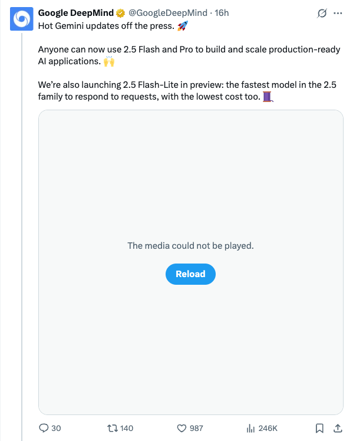

GoogleDeepMind_Gemini 2.5系列模型更新及开放使用
发布时间: 2025-06-17T16:02:57.000Z Google DeepMind宣布推出Gemini系列模型的最新更新，其中Gemini 2.5 Flash和Pro现已全面开放，供开发者构建和扩展生产级AI应用。此外，还推出了2.5 Flash-Lite的预览版，这是2.5系列中最快的模型，响应速度快且成本最低，旨在进一步降低AI应用开发的门槛和运行成本。
2025-06-17
Google DeepMind宣布推出Gemini系列模型的最新更新，其中Gemini 2.5 Flash和Pro现已全面开放，供开发者构建和扩展生产级AI应用。此外，还推出了2.5 Flash-Lite的预览版，这是2.5系列中最快的模型，响应速度快且成本最低，旨在进一步降低AI应用开发的门槛和运行成本。
OpenAI联合创始人Greg Brockman宣布，ChatGPT的图像生成功能已全面向所有WhatsApp用户开放。用户现在可以通过拨打1-800-ChatGPT号码，在WhatsApp中直接体验AI图像生成服务。此举显著拓展了ChatGPT的应用场景，使其多模态能力更便捷地触达广大移动用户，预示着AI在日常通信平台中的深度融合。
Sakana AI发布ALE-Bench基准测试和ALE-Agent智能体，旨在自动化解决NP难优化问题。ALE-Bench是与AtCoder合作开发的编码基准，专注于需要长期和创造性推理的开放式优化挑战。其端到端智能体ALE-Agent在2025年5月的AtCoder启发式竞赛中，在千名人类选手中排名第21位（前2%），展现了AI在物流、路由等实际硬优化问题中的强大发现能力。
推文作者fabianstelzer正在进行一项实验，利用智能体（agents）结合Flux Ultra、Kling 2.1和MMAudio等工具生成更长的视频，并通过自动化拼接技术实现。他以“罗马军团旅行日志”为提示词，认为未来视频创作的重心将从直接制作影片转向创建能够制作影片的智能体，预示着内容创作模式的深刻变革。
Unsloth AI发布了针对大型语言模型（LLM）的强化学习（RL）完整指南。该指南深入探讨了RL的目标及其在构建智能AI智能体中的关键作用，解释了o3、Claude 4、R1等模型应用RL的原因，并详细介绍了GRPO、RLHF、DPO等技术及奖励函数，同时提供了通过Unsloth训练本地R1模型的实践方法。
知名AI科学家Yann LeCun引用Benjamin Todd的观点，解释AI在长时间任务中表现不佳的原因。该理论指出，若AI每10分钟存在10%的错误率，则任务时长越长，成功率呈指数级下降：1小时成功率53%，10小时仅0.002%。此“恒定错误率”理论已通过测试，并被证实与数据吻合，揭示了AI在复杂、持续性任务中的局限性。
地平线开源了EmbodiedGen，这是一个交互式3D物理世界生成平台。该平台能以低成本、可扩展地生成高质量、可控且逼真的URDF格式3D资产，具备精确物理属性和真实世界尺度，并可无缝导入Gym和Isaac等物理仿真引擎进行训练与评估。EmbodiedGen集成了图生3D、文生3D、纹理生成等六大核心模块，利用生成式AI解决具身智能研究中的泛化和评估挑战，支持3D场景及现实到仿真生成等落地应用，极大提升了3D资产创建效率与仿真研究能力。
最新战报显示，DeepSeek新版R1-0528在网页编程能力上超越了此前被誉为“全球最强编码模型”的Claude Opus 4，加冕全球第一。文章通过实测展示了DeepSeek-R1在生成太阳系动画、Three.js模拟及AGI主题网站代码方面的强大实力，尽管在某些复杂任务（如俄罗斯方块游戏）上仍有改进空间。作为一款开源模型，DeepSeek-R1不仅在编程榜单上表现出色，还被评为当前最好的开源文本模型，并在总榜中位列第六，对国内用户更为友好。同时，文章也提及了Kimi新模型在代码开源SOTA方面的突破。
豆包爱学App的豆包大模型教育版在高考数学全国Ⅰ卷和Ⅱ卷中分别获得144分和150分（满分），其中Ⅱ卷成绩由六位平均教龄超10年的资深数学教师严格评审并给出满分，含金量极高。该AI展现出卓越的多模态理解、信息整合、逻辑推理及公式渲染能力，尤其在处理复杂选择题和压轴题时表现出色，思考过程精简且解题稳定。文章强调了其答题的稳定性，经过多次测试并公开结果。名师们高度评价其作为教学助手和学习伙伴的潜力，能提供高质量一对一讲解，促进学生严谨推理能力培养，并有望缓解教育资源不均问题，预示着AI教育的广阔前景。
新智元报道，Sakana AI与AtCoder合作推出ALE-Bench基准，旨在评估AI解决NP难题的能力。其基于Gemini 2.5 Pro开发的ALE-Agent智能体，通过结合领域知识提示和多样化解法生成，在AtCoder启发式竞赛中表现卓越，与千名人类选手同场竞技，最终排名第21位，跻身前2%。这标志着AI在物流路径、任务调度等现实复杂优化问题上取得重大突破。尽管智能体在调试、时间复杂度分析等方面仍有局限，但其高速迭代优化能力展现出巨大潜力，预示着未来AI在算法工程领域将达到甚至超越人类顶尖水平。
香港中文大学团队撰写的语音大模型（SpeechLM）综述论文《Recent Advances in Speech Language Models: A Survey》被ACL 2025主会议接收，成为该领域首个全面系统梳理。该综述指出SpeechLM是AI下一个风口，旨在通过端到端处理解决传统语音交互的信息丢失、延迟和错误累积问题，实现自然人机语音对话。文章详细阐述了SpeechLM的技术架构、训练策略及全双工交互范式。其应用涵盖自然对话、个性化助手及情感语音生成，并探讨了评估体系与未来挑战，预示SpeechLM将开启语音AI新纪元，彻底改变人机交互方式。
小鹏汽车作为首个转型AI公司的新势力，在CVPR 2025全球计算机视觉顶会上展示了其下一代自动驾驶基座模型及研发进展。文章详细阐述了小鹏G7搭载的VLA+VLM模型，以及其基于“大算力+大模型+大数据”的L3级智能驾驶策略。小鹏构建了从云端到车端的全面AI体系，包括720亿参数的云端基座模型和10 EFLOPS的智算集群，并验证了自动驾驶领域的Scaling Laws。其世界基座模型具备视觉理解、链式推理和动作生成能力，通过强化学习持续进化，展现出领先的拟人化驾驶水平，预示着智能驾驶迈向更高阶的“AI开发汽车”新范式。

Jan是一款桌面AI助手，支持完全离线运行，强调用户隐私保护。它允许用户下载并本地运行Llama、Gemma等大型语言模型，同时也能集成OpenAI、Anthropic等云端服务。Jan提供OpenAI兼容API，方便其他应用调用，并支持创建自定义AI助手。该项目基于Node.js、Rust和Tauri构建，旨在为用户提供一个安全、私密的本地AI交互环境。
Anthropic Cookbook是一个为开发者构建Claude应用而设计的代码和指南集合。它提供可直接集成的代码片段，涵盖文本分类、检索增强生成、摘要、工具使用、多模态能力及高级技术等。该项目旨在帮助开发者利用Claude API，通过Python示例和可适配其他语言的概念，提升AI应用开发效率。
RAGFlow是一个基于深度文档理解的开源RAG（检索增强生成）引擎，旨在为各类企业提供高效、真实的问答能力。它结合大型语言模型（LLM），支持从复杂格式数据中提取知识并提供可追溯的引用，有效减少幻觉。RAGFlow具备深度文档理解、智能分块、异构数据源兼容及自动化RAG工作流等核心特性，支持多种LLM和嵌入模型配置，并通过直观API实现无缝集成，是构建可靠知识问答系统的理想解决方案。

DeepEP是一个专为MoE和专家并行设计的通信库，提供高吞吐、低延迟的全互联GPU内核，支持FP8等低精度操作。它针对DeepSeek-V3的门控算法优化了非对称域带宽转发，适用于训练和推理预填充任务，并支持SM数量控制。此外，DeepEP还包含纯RDMA低延迟内核，用于敏感的推理解码，并引入了不占用SM资源的通信计算重叠方法，显著提升了MoE模型的通信效率和性能。

该GitHub仓库“Awesome LLM Apps”是一个精选的大语言模型（LLM）应用集合，涵盖了检索增强生成（RAG）、AI智能体、多智能体团队、MCP（多模态控制策略）和语音智能体等多种技术。它展示了利用OpenAI、Anthropic、Google以及DeepSeek、Qwen、Llama等开源模型构建的实际应用。该项目旨在帮助开发者探索LLM在不同领域的应用潜力，并促进开源LLM应用生态系统的发展。

Continue是一个开源平台，通过VS Code和JetBrains扩展为开发者提供定制化AI代码助手。它集成了Agent、Chat、Autocomplete和Edit等功能，使开发者无需离开IDE即可利用大型语言模型进行代码修改、提问和自动补全。该项目旨在提升开发效率，简化编码流程，并提供一个模型、规则和提示的中心，赋能开发者构建和共享AI辅助编程工具。

我们推出MiniMax-M1，这是全球首个开源、大规模混合注意力推理模型。MiniMax-M1由混合专家混合（MoE）架构与闪电注意力机制相结合驱动。该模型基于我们之前的MiniMax-Text-01模型开发，总参数量为4560亿，每个token激活459亿参数。M1模型原生支持100万token的上下文长度，是DeepSeek R1上下文大小的8倍。此外，MiniMax-M1中的闪电注意力机制能够高效扩展测试时计算。这些特性使得M1特别适用于需要处理长输入和进行广泛思考的复杂任务。MiniMax-M1使用大规模强化学习（RL）在包括基于沙盒的真实世界软件工程环境在内的多样化问题上进行训练。除了M1在RL训练中固有的效率优势外，我们提出了CISPO，一种新颖的RL算法，以进一步提高RL效率。CISPO裁剪重要性采样权重而非token更新，优于其他有竞争力的RL变体。结合混合注意力和CISPO，MiniMax-M1在512块H800 GPU上的完整RL训练仅需三周即可完成，租用成本仅为534,700美元。我们发布了两个版本的MiniMax-M1模型，分别具有4万和8万的思考预算，其中4万模型代表8万训练的中间阶段。标准基准测试实验表明，我们的模型与DeepSeek-R1和Qwen3-235B等强大的开源模型相当或更优，在复杂软件工程、工具利用和长上下文任务方面表现出特别的优势。我们在https://github.com/MiniMax-AI/MiniMax-M1公开MiniMax-M1。

深度研究智能体是基于大型语言模型（LLM）的智能体中一个重要的类别。通过自主协调多步骤网络探索、定向检索和高阶综合，它们能将海量的在线信息转化为分析师级别的、富含引用的报告——将数小时的人工案头研究压缩至数分钟。然而，目前仍缺乏一个系统评估这些智能体能力的综合性基准。为弥补这一空白，我们提出了DeepResearch Bench，这是一个包含100个博士级别研究任务的基准，每个任务均由22个不同领域的领域专家精心设计。评估深度研究智能体（DRA）本身是复杂且劳动密集型的。因此，我们提出了两种新颖的方法，它们与人类判断高度一致。第一种是基于参考的方法，采用自适应标准来评估所生成研究报告的质量。另一个框架旨在通过评估其有效引用数量和整体引用准确性来评估DRA的信息检索和收集能力。我们已将DeepResearch Bench及这些框架的关键组件开源于https://github.com/Ayanami0730/deep_research_bench，以加速实用型基于LLM的智能体的开发。

我们提出了Ego-R1，一个用于超长（即数天或数周）第一人称视频推理的新颖框架。该框架利用由通过强化学习（RL）训练的Ego-R1智能体编排的结构化工具链思维（CoTT）过程。受人类问题解决策略的启发，CoTT将复杂的推理分解为模块化步骤，RL智能体在每个步骤中调用特定工具，以迭代和协作地回答子问题，从而处理时间检索和多模态理解等任务。我们设计了一个两阶段训练范式，包括使用CoTT数据对预训练语言模型进行监督微调（SFT）以及强化学习，以使我们的智能体能够动态地为长程推理提出逐步的工具。为了促进训练，我们构建了一个名为Ego-R1 Data的数据集，其中包含用于SFT的Ego-CoTT-25K和用于RL的Ego-QA-4.4K。此外，我们的Ego-R1智能体在一个新策划的周级视频问答基准Ego-R1 Bench上进行了评估，该基准包含来自混合源的人工验证问答对。大量结果表明，我们的Ego-R1智能体所采用的动态、工具增强的思维链推理能够有效应对理解超长第一人称视频的独特挑战，显著将时间覆盖范围从数小时扩展到一周。

我们引入了TransDiff，这是首个将自回归（AR）Transformer与扩散模型相结合的图像生成模型。在这个联合建模框架中，TransDiff将标签和图像编码为高级语义特征，并利用扩散模型来估计图像样本的分布。在ImageNet 256x256基准测试中，TransDiff显著优于基于独立AR Transformer或扩散模型的其他图像生成模型。具体而言，TransDiff实现了1.61的Fréchet Inception Distance (FID)和293.4的Inception Score (IS)，并且与基于AR Transformer的最新方法相比，推理延迟快2倍，与仅基于扩散模型的方法相比，推理延迟快112倍。此外，在TransDiff模型的基础上，我们引入了一种新颖的图像生成范式，称为多参考自回归（MRAR），它通过预测下一张图像来执行自回归生成。MRAR使模型能够引用多个先前生成的图像，从而促进学习更多样化的表示并提高后续迭代中生成图像的质量。通过应用MRAR，TransDiff的性能得到提升，FID从1.61降低到1.42。我们期望TransDiff能在图像生成领域开辟新的前沿。

本文系统性地综述了离散扩散语言模型（dLLMs）和离散扩散多模态语言模型（dMLLMs）。与自回归（AR）模型不同，dLLMs和dMLLMs采用多令牌、并行解码范式，利用全注意力机制和基于去噪的生成策略。这种范式自然地实现了并行生成、细粒度输出可控性以及动态、响应感知的感知能力。这些能力是自回归模型此前难以实现的。近期，越来越多的工业级专有d(M)LLMs以及大量的开源学术d(M)LLMs已展现出与自回归模型相当的性能，同时推理速度提升高达10倍。离散扩散LLMs和MLLMs的进步主要得益于两个领域的进展。首先是自回归LLMs和MLLMs的发展，这为训练和推理积累了大量数据、基准和基础架构。其次是离散扩散底层数学模型的演进。这些进展共同推动了2025年初dLLMs和dMLLMs研究的激增。本文全面概述了dLLM和dMLLM领域的研究。我们追溯了dLLMs和dMLLMs的历史发展，规范了其底层数学框架，并对代表性模型进行了分类。我们进一步分析了训练和推理的关键技术，并总结了语言、视觉-语言和生物领域的新兴应用。最后，我们讨论了未来的研究和部署方向。

大语言模型（LLMs）的最新进展对从通用领域到专业领域的广泛领域产生了重大影响。然而，这些进展也显著增加了恶意用户利用有害和越狱提示进行恶意攻击的可能性。尽管已经有许多努力来阻止有害提示和越狱提示，但保护LLMs免受此类恶意攻击仍然是一项重要且具有挑战性的任务。在本文中，我们提出QGuard，一种简单而有效的安全防护方法，它利用问题提示以零样本方式阻止有害提示。我们的方法不仅可以防御基于文本的有害提示，还可以防御多模态有害提示攻击。此外，通过多样化和修改防护问题，我们的方法在不进行微调的情况下，对最新的有害提示保持鲁棒性。实验结果表明，我们的模型在纯文本和多模态有害数据集上都表现出竞争力。此外，通过提供问题提示的分析，我们实现了用户输入的白盒分析。我们相信我们的方法为实际LLM服务在缓解与有害提示相关的安全风险方面提供了宝贵的见解。